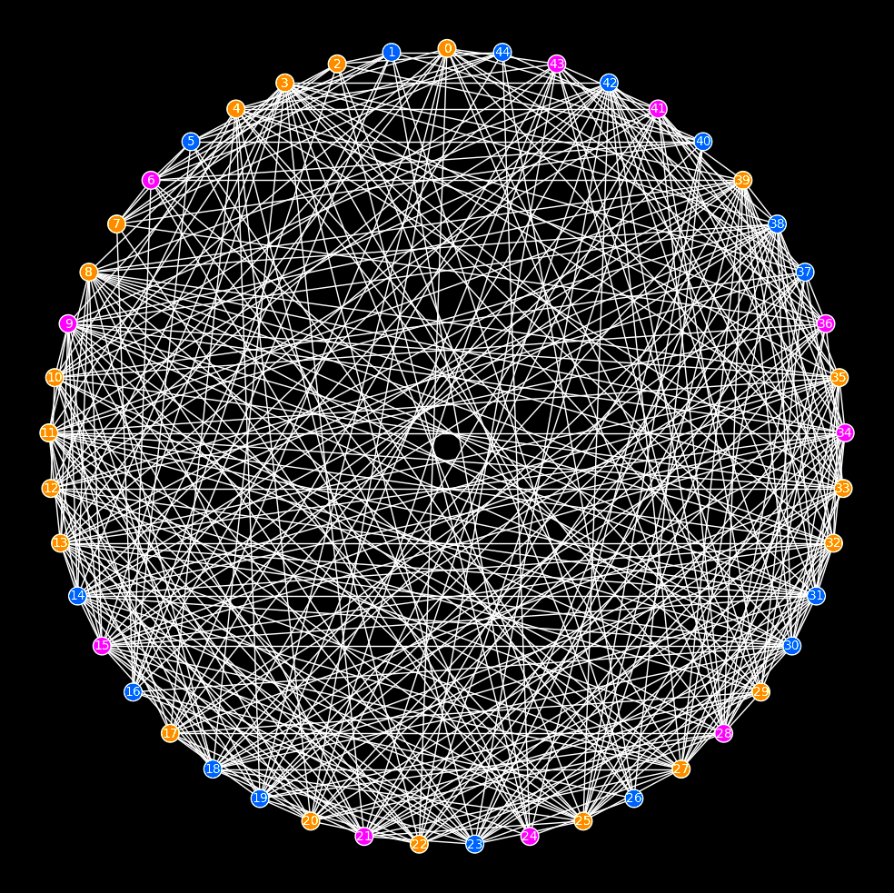

Computational Neuroscience

|
Clustering rat's hippocampus regions using EEG/LFP data, epileptic seizures, hypoxia, and forming memory. In this project we use the data collected from particular parts of hippocampus during pre- and post-
ictal periods of an eplieptic seizure to form networks of the brain. The network then is analysed from various perspectives. In particular, the analysis involves varaious computations mentioned below.
|

|
Human brain networks, regions, and dynamics. In this project we use the fMRI data collected from all over healthy human brain to form networks of the entire brain. The network then is analysed from various
perspectives. In particular, the analysis involves varaious computations mentioned below.
|
|
All the code can be found on GitHub. Cross-Correlation
Mutual Information Anticorrelation Centrality:
Clustering:
|
Machine Learning

|
Regression: Predicting students’ admission to a university based on multiple test scores and other criteria using various regression models. |

|
Classification: Classifying microchips based on various test results. |

|
Neural Networks: Handwritten digit recognition based on MNIST data set using neural networks. |

|
Bias/Variance and Validation Curves: Improving the method used in predicting the amount of overflow of water from a dam based on the historical data of the water levels by employing bias/variance analysis and validation curves. |

|
Gaussian Kernel and SVM:Email processing and spam detection using multivariate Gaussian kernels and support vector machines. |

|
Image compression involving
|

|
Anomaly detection in EEG data using Gaussian kernels.
|

|
Recommender Systems: Recommending movies based on MovieLenz 100K data set using collaborative recommendation systems. |
|
All the code can be found on GitHub. Regression:
Neural Networks Bias-Variance Analysis Validation Curves Multivariate Gaussian Kernel Support Vector Machine Principal Component Analysis Dimension Reduction K-means Clustering K-Nearest Neighbors Classification Anomaly Detection Collaborative Recommendation Systems Big data:
|
Shell & Bash
 Parallelizing scripts
Parallelizing scripts X manipulation
- Rotating display output
- Rotating touch/pen
- Enabling/Disabling touch/pen
- Enabling/Disabling keyboard
Quick Search
Graph Theory & Linear Algebra

Inverse Eigenvalue Problems for graphs: -
lambda solver for all graphs
SAGE: Given a graph and a set of distinct eigenvalues, this finds a matrix with that graph and spectrum. -
lambda-mu solver for trees
SAGE: Given a tree, two sets of sctrictly interlacing eigenvalues, and a fixed vertex, this finds a matrix whose graph is the given tree, its spectrum is the bigger set, and the spectrum after deleting the given vertex is the smaller set. This is based on the work of Duarte (1989). -
lambda-tau solver for trees
SAGE: Given a tree, two sets of strict second degree interlacing eigenvalues, and two fixed vertices, this finds a matrix whose graph is the given tree, its spectrum is the bigger set, and the spectrum after deleting the given vertices is the smaller set. This is based on the work of Hassani Monfared and Shader (2015). -
polynomials lambda solver for all graphs
SAGE: Given a set of graphs and a set of distinct eigenvalues, this finds a matrix polynomial of the proper degree whose eigenvalues are the given numbers and the graphs of the coefficients are the given graphs. In particular, this solves the quadratic inverse eigenvalue problem. This is based on the work of Hassani Monfared and Lancaster (2018). -
full matrix constructor with given spectrum
SAGE: Given n real numbers with at least two of them being distinct, this constructs a real symmetric matrix with no zero entries such that its eigenvalues are the given numbers. The necessary and sufficient condition for such matrix to exist is that the given list of numbers has at least two distinct numbers in it. The code checks this and prints an error if it is not satisfied. The algorithm is an implementation of the proof of Theorem Theorem 3.1 of "The combinatorial inverse eigenvalue problems: complete graphs and small graphs with strict inequality, W. Barrett, A. Lazenby, N. Malloy, C. Nelson, W. Sexton, Electronic Journal of Linear Algebra, 656-672 (26) 2013"
Signal Processing
 Mutual Information
Mutual Information Moving Avereage
Filtering
Fourier Transformations
Power Spectral Density